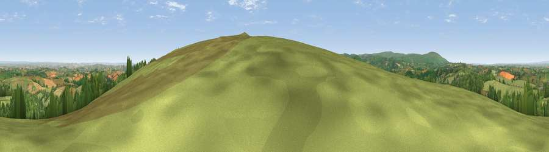

Viewpoint near Drewsteignton
#2884 in England · top 4% of its area beats it · near DrewsteigntonWhere it is
The exact computed spot (SX 73675 89175). Click the marker for map links.
The view, rendered

A 360° render of this exact spot computed from the terrain model, tree cover and land cover — summer colours, afternoon light, calibrated against photographs of famous viewpoints. Real trees, hedges and buildings will differ in detail.
The panorama
Grey silhouette: terrain skyline in each direction (720 bearings, Earth curvature and refraction included). Dashed green: skyline with trees (+15 m) and buildings (+8 m) as obstacles. Blue strip: how far the ground is visible on each bearing.
Where the view opens
Wedge length = distance to the farthest visible ground on that bearing (vegetation-aware). Rings at 10, 25 and 50 km.
What fills the view
52% grassland · 37% woodland · 9% cropland ·
Angular shares of the visible panorama (visual magnitude), not map area. Landscape diversity 0.43 (0–1 Shannon).
Key numbers
More beautiful places nearby
The staircase of upgrades: each row has a higher view potential than everything closer. Driving times are estimates from straight-line distance, calibrated against real road routing — check an actual route before setting out.
| Place | Direction | Drive | Score |
|---|---|---|---|
| Viewpoint near Drewsteignton | SE · 0 km | ~1 min | 75.1 |
| Butterdon Hill | ESE · 2 km | ~4 min | 76.4 |
| Viewpoint near North Bovey | S · 7 km | ~14 min | 77.8 |
| Viewpoint near North Bovey | S · 7 km | ~14 min | 79.3 |
| Cairn | SSE · 11 km | ~20 min | 79.8 |
| Viewpoint near Haytor Vale | SSE · 11 km | ~22 min | 80.1 |
| Viewpoint near Buckland in the Moor | S · 16 km | ~28 min | 80.7 |
| Viewpoint near Kenton | ESE · 21 km | ~35 min | 82.9 |
50.68847, -3.78970 · source: screening · position refined by local search. Computed location — check access rights before visiting.